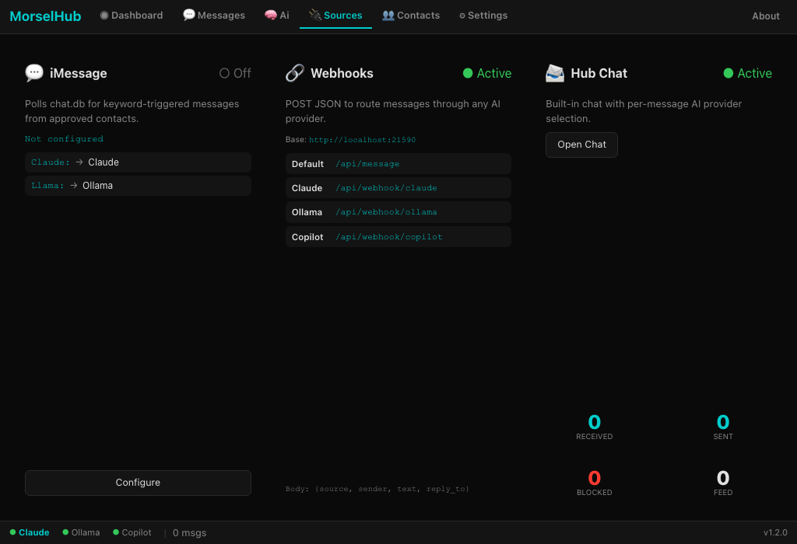
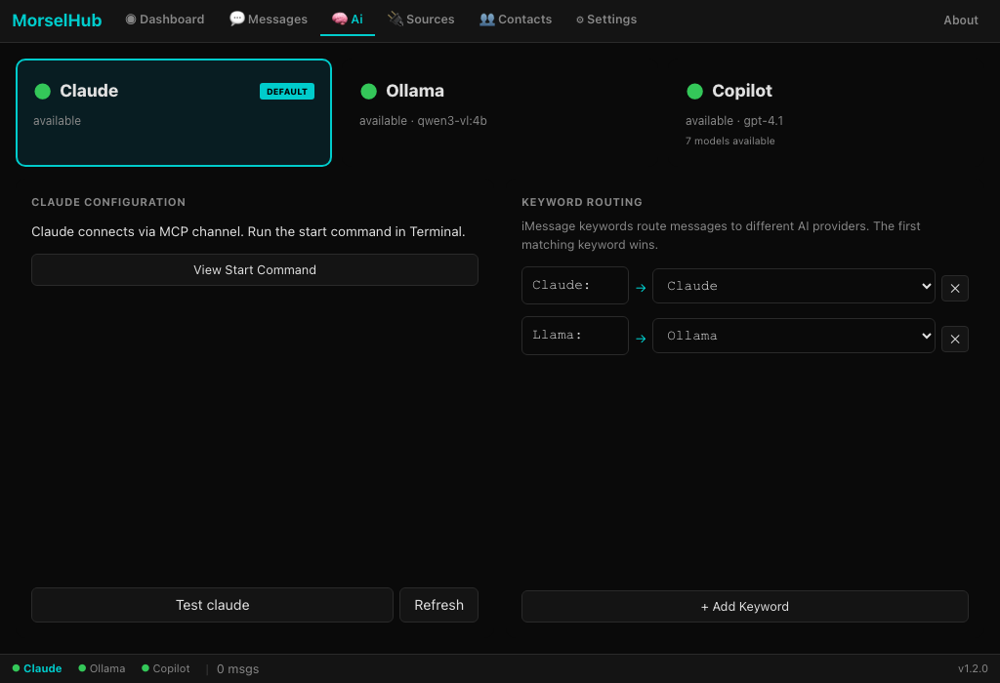
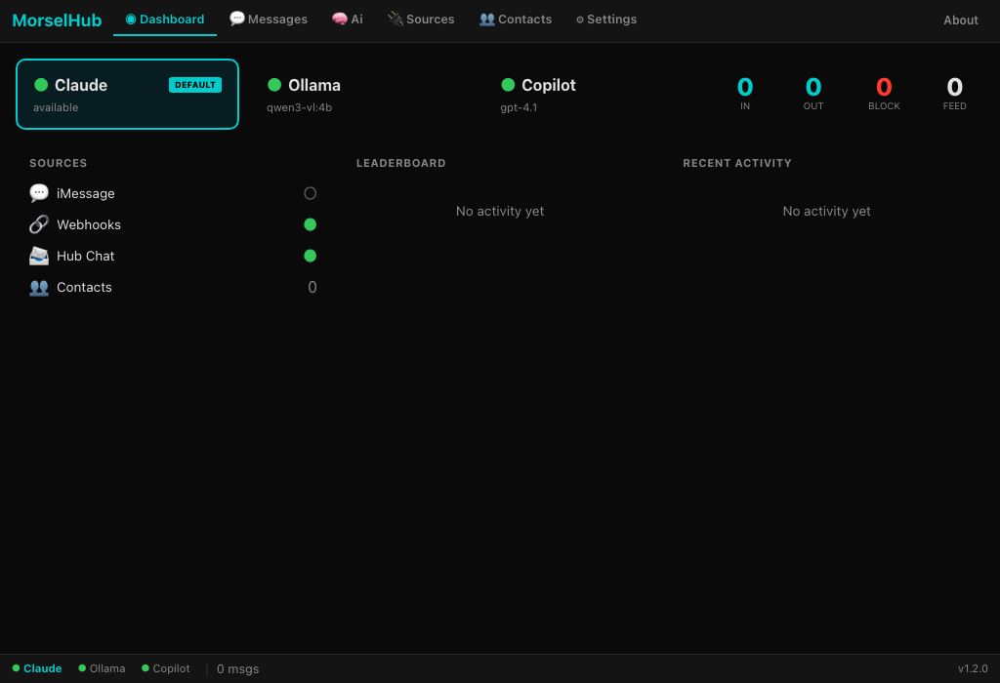
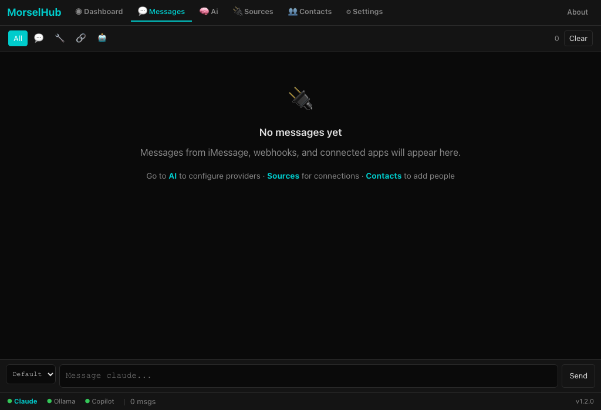
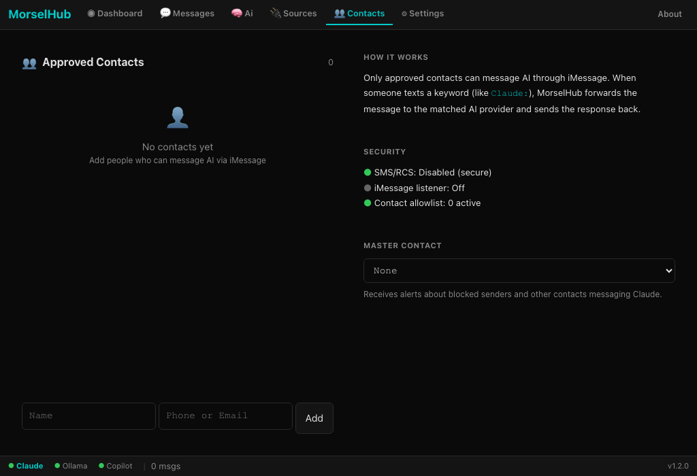
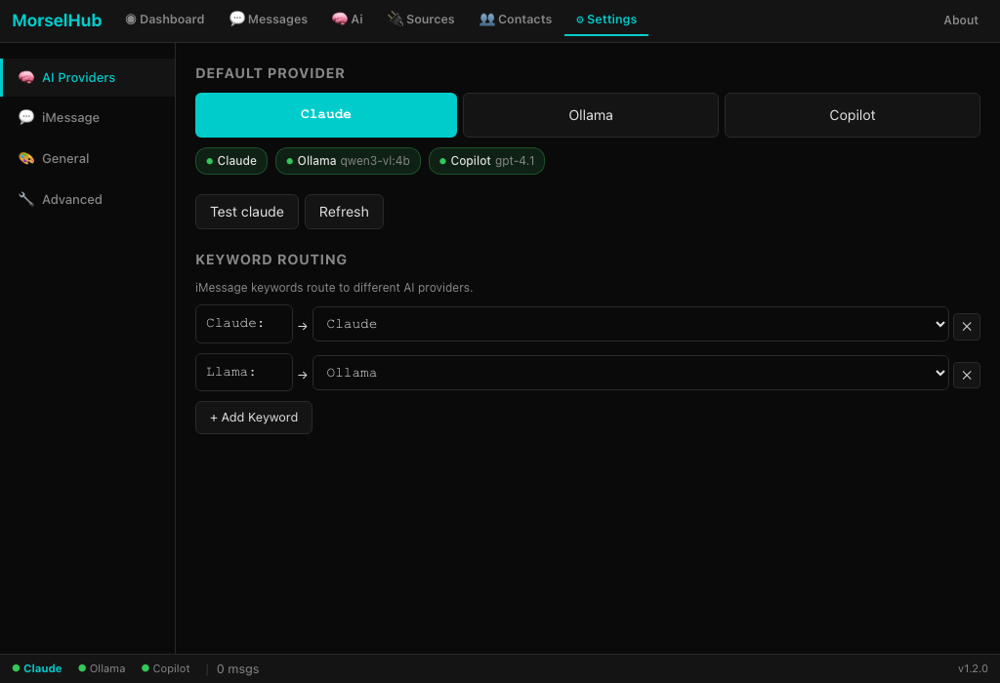

Connect everything to AI. Switch providers per-message.
MorselHub bridges iMessage, RetroCode IDE, and webhooks to Claude, Ollama, and GitHub Copilot. Route any message to any AI provider — automatically. Every morsel counts.
v1.2.0 · macOS 12+ (Apple Silicon) · Free · Signed & Notarized
Features
MorselHub is a universal AI broker that connects your message sources to your AI providers, all from a native macOS app.
Text any AI from your phone. Send "Claude: hello" or "Llama: explain gravity" via iMessage. Keyword routing delivers each message to the right provider. Replies come back as iMessages.
23 MCP tools auto-discovered from RetroCode. AI edits code, runs programs, manages tabs, reads files, and controls the terminal across 26 languages.
Claude via MCP Channels, Ollama for local AI, GitHub Copilot for GPT-4o and Claude 3.5 Sonnet. Switch providers from the dashboard or per-message with keywords.
Push-based messaging with Claude. Messages from iMessage and RetroCode push instantly to Claude via MCP server channels. No polling, no delays.
Per-provider webhook endpoints let any application connect. POST to /api/webhook/claude, /ollama, or /copilot. Integrate CI/CD, bots, or custom tools.
Real-time AI status, message counters, source activity, leaderboard, and logs. Navigate between Dashboard, Messages, AI Providers, Sources, Contacts, and Settings.
Architecture
MorselHub sits between your message sources and AI providers, routing each message to the right destination based on keywords or your default provider setting.
Message sources feed into MorselHub from multiple channels: iMessage reads your chat database in real-time, RetroCode connects via its API manifest, webhooks accept HTTP POST, and the built-in Hub Chat provides a direct interface.
Intelligent routing directs each message to the correct AI. Prefix with "Claude:", "Llama:", or "Copilot:" to override the default. Replies are automatically sent back through the original channel.
Push architecture means Claude receives messages instantly via MCP Channels. iMessage polling is handled by a native Rust binary that runs efficiently in the background.
AI Providers
Switch between cloud and local AI on a per-message basis. Each provider has its own strengths.
Anthropic · MCP Channels
Push-based messaging through MCP Channels. Claude receives messages instantly and can call 23+ RetroCode tools, send iMessages, and read feeds.
Local · Private · Free
Run AI entirely on your machine. No internet, no API keys, no token charges. Pull any model from the Ollama library and start chatting.
GPT-4o · Claude 3.5 Sonnet · Gemini
Access multiple frontier models through your GitHub Copilot subscription. Switch between GPT-4o, Claude 3.5 Sonnet, and Gemini with model selection.
IDE Integration
AI-powered coding through a retro-inspired IDE. MorselHub auto-discovers RetroCode's API manifest and exposes 23 MCP tools to Claude.
When RetroCode is running, MorselHub detects its API manifest and registers all tools with Claude. AI can read and write code, run programs, manage terminals, switch languages, and more.
Ask Claude to write a program and it appears in RetroCode's editor. Run it with a single tool call. View terminal output. Debug and iterate in real-time through iMessage, webhooks, or the Hub Chat.
From Assembly and BASIC to Python, JavaScript, Rust, Go, and more. RetroCode supports syntax highlighting, execution, and language-specific features for each one.


Screenshots
A native macOS app with a full-featured dashboard, message feed, provider management, and contact controls.




Get Started
Get MorselHub running in minutes. Free, signed, and notarized for macOS.
Universal AI broker for macOS. Connect iMessage, RetroCode, and webhooks to Claude, Ollama, or GitHub Copilot.
Download .dmg (Apple Silicon)macOS 12+ · Apple Silicon (M1/M2/M3/M4) · Signed & Notarized
Security notice: Only approved contacts can send messages to AI. Manage your contact allowlist carefully -- anyone on the list can trigger AI actions including running commands and editing files via Claude Code's tools.
Token usage: Messages forwarded to Claude consume tokens from your Claude subscription. Monitor usage in the dashboard.
Use at your own risk. MorselHub is provided as-is, without warranty. You are responsible for managing your contact list and monitoring AI activity.